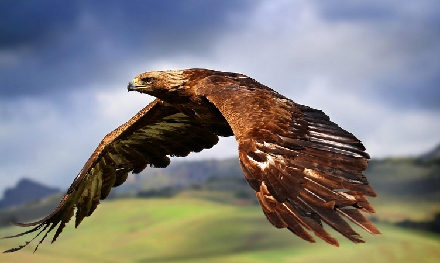
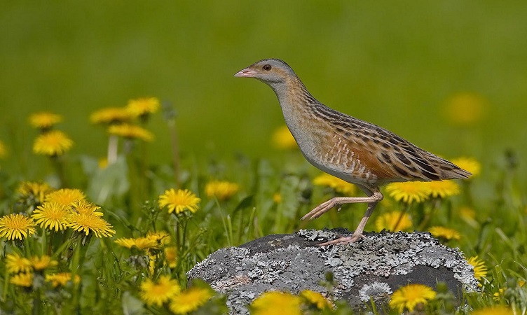
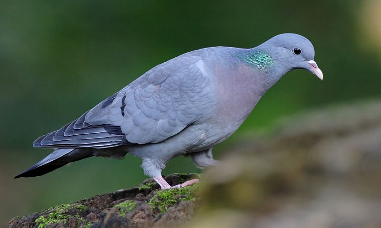

Скален орел
 Скалният орел е с дължина на тялото80 – 93 см. Храни се с разнообразни дребни животни, но предпочита лалугери и сухоземни костенурки, които разчупва, като ги пуска отвисоко върху скали. Лови и врани, кеклици, зайци, лисици, змии и др. През зимата се изхранва и с трупове на животни. Обитава скали в близост до открити пространства.
Ливадният дърдавец
 На големина е колкото пъдпъдък (130-190 г. и 25-29 см). Обитава предимно обработваеми площи, но се среща и по влажни ливади, предпланински плата и хълмисти райони с тревна растителност. Все пак той намира спокойствие най-вече в хвойнови храсталаци и високопланински ливади по южните склонове. Храни се със семена и дребни насекоми.
Гълъб хралупар
 В недалечното минало гълъбът хралупар е бил сравнително широко разпространен, но изсичането на горите и унищожаването на естествения му биотоп предизвикват значително намаляване на популацията, до степен да се превърне в застрашен от изчезване вид. Основната причина за намаляването на числеността му се счита липсата на подходящи хралупи с които живота му е тясно свързан. Когато отгледа едно люпило в дадена хралупа, гълъба хралупар я оставя силно замърсена и негодна за повторна употреба, което налага наличието на втора за да може да отгледа второ люпило през същата година. В райони, където проблемът с гнезденето и спането е отпаднал, благодарение на изкуствени къщички или защитени райони в горите, гълъбът хралупар сравнително бързо може да възстанови своята численост, защото хранителната му ниша е доста подобна на тази на скалния гълъб и обикновено не страда от липса на храна. Храната му в дивата природа се състои от зърна, семена, кълнове и плодчета, но в близост до хора се храни с тестени отпадъци и други.с